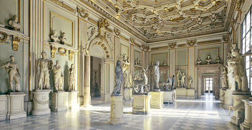
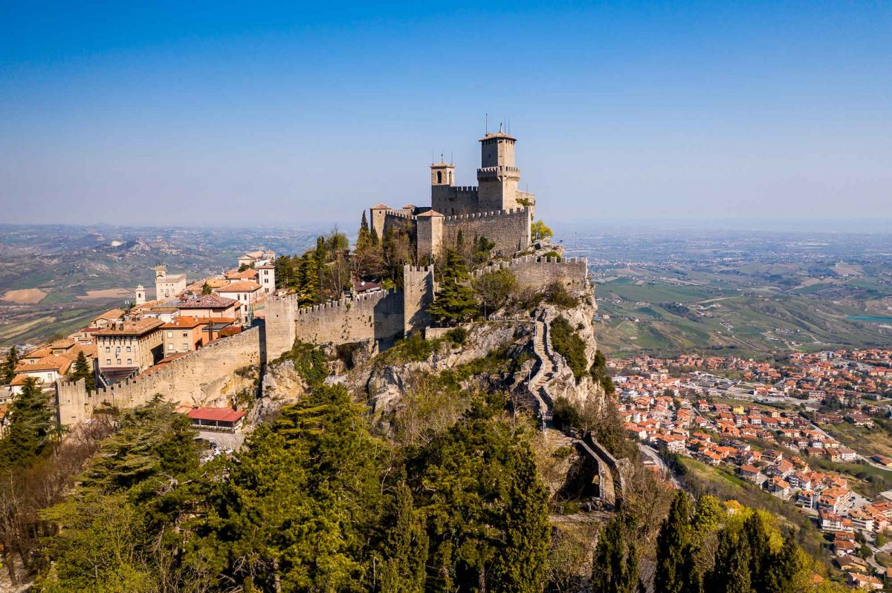

Questo é il diario del mio viaggio di 4 giorni da Napoli a Bologna, al suo interno verrano raccontati i luoghi e le emozioni vissute durante questo viaggio all'insegna della follia mia e dei miei Compagni di viaggio.
Tappe: |
Canzoni ascoltate: |
|---|---|
Giorno 1: Si parte dalla stazione di Napoli alle 14:32, freccia rsossa, seconda classe,
il traggito dura circa 2 ore, il treno era stranamente silenzioso, alle 17 prima fermata: Roma.
Dopo essere arrivato alla stazione decido di prendermi la serata per sistemare delle faccende, rimndando al giorno successivo l'esplorazione della cittá.
Giorno 2:Roma é una cittá stremamente caotica, durante questa sosta faccio un giro per ,la cittá scoperndo tutte le sue bellezze, ad esempio i Musei Capitolini.
Finito il giro passo la notte in un hotel in attessa del prossimo treno.
Giorno 3: appena sveglio faccio colazione e parto alla volta del nuovo treno, stavolta diretto a San Marino.
 Arrivato a San Marino, oltre che in un altro stato, sembra di esser arrivati in un nuovo mondo, rispetto a Roma l'aria è molto piú pulita e la natura riempie il paesaggio.
Una delle strutture più pittoresche del luogo è stato il Museo delle torture.
Quest'ultimo espone circa un centinaio di strumenti di tortura ed esecuzione capitale realizzati tra il XVI ed il XVIII secolo.
Dopo questa gita pittoresca in questo piccolo stato mi dirigo alla volta dell'ultimo treno del mio viaggio, quello diretto a Bologna
Giorno 4:Ultimo giorno di viaggio, sono finalmente arrivato a Bologna, tutto questo viaggio é stato sviluppato al solo scopo di realizzare un desiderio.
TOUR CULINARIO, esatto, 4 giorni di viaggio per del cibo, l'avevo detto io fosse un viaggio folle.